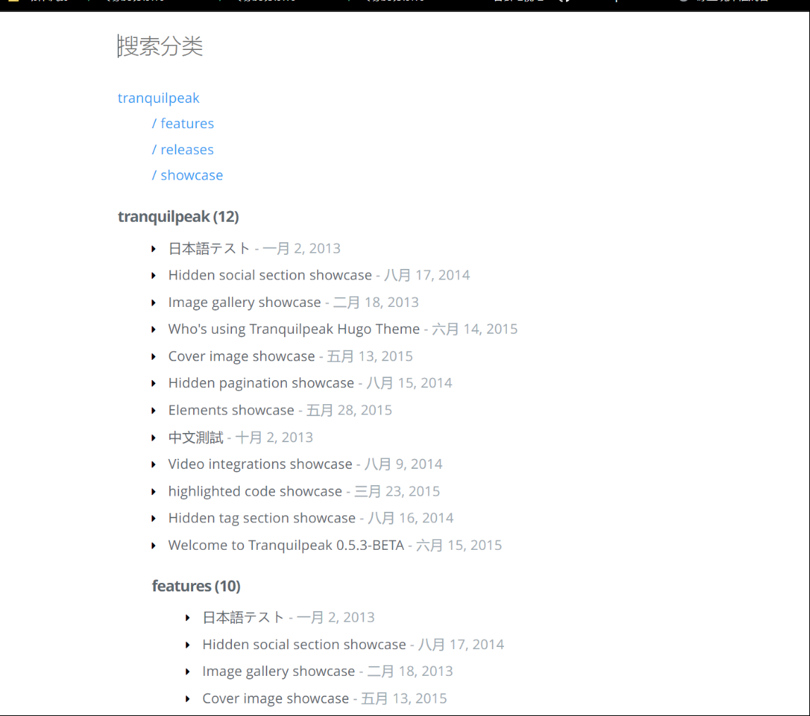
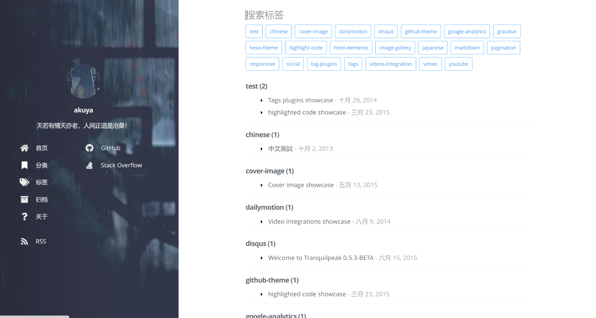
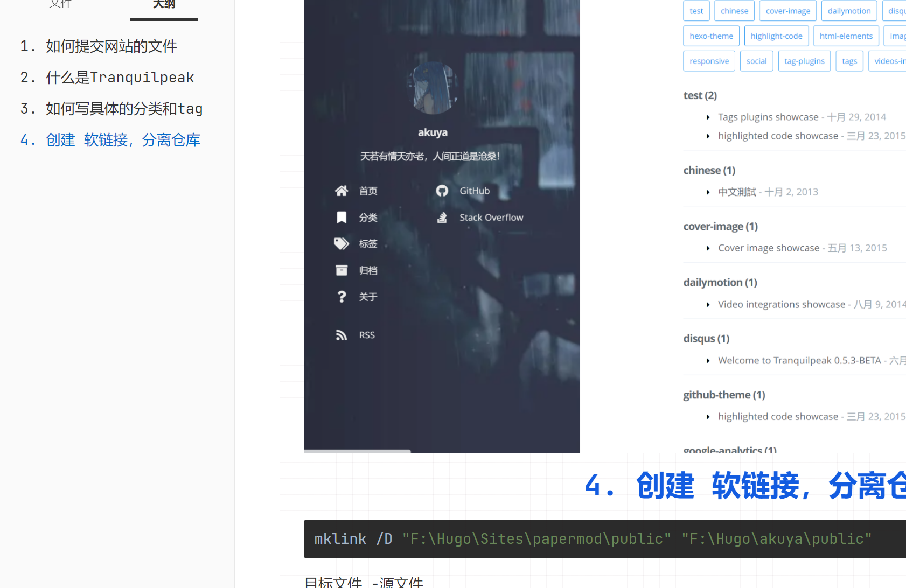
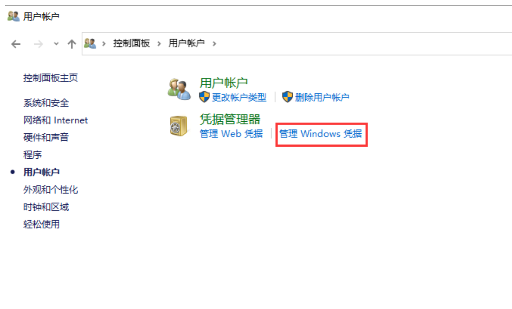

1. 如何提交网站的文件
git init
git add .
git commit -m "first commit"
git branch -M main
git remote add origin https://github.com/SteinsGatee/SteinsGatee.github.io.git
git pull origin main
git pull origin main --allow-unrelated-histories
git push -u origin main
之后就是这个样子：
cd public
git add .
git commit -m "xx"
git push
echo "# akuyaz.github.io" >> README.md
git init
git add README.md
git commit -m "first commit"
git branch -M main
git remote add origin https://github.com/akuyaz/akuyaz.github.io.git
git push -u origin main
2. 什么是Tranquilpeak
Tranquilpeak 是一款 WordPress 主题，通常用于创建博客或个人网站。您提到的 “features”、“releases” 和 “showcase” 可能是与 Tranquilpeak 主题相关的内容。让我为您解释一下：
- Features（功能）: 这通常指的是 Tranquilpeak 主题的功能和特性。这可能包括布局选项、颜色主题、自定义小部件、社交媒体集成等。
- Releases（发布版本）: 这可能是指 Tranquilpeak 主题的不同版本或更新。每个版本都可能包含修复漏洞、增加新功能或改进性能等方面的变化。
- Showcase（展示）: 这可能是 Tranquilpeak 主题的使用案例展示。通常，网站开发者和用户会分享他们使用 Tranquilpeak 主题创建的网站，以展示主题的不同应用和设计风格。
3. 如何写具体的分类和tag


4. 创建软链接，分离仓库
mklink /D "F:\Hugo\Sites\papermod\public" "F:\Hugo\akuya\public"
目标文件 -源文件

5. 创建一个新的github账号后，你应该做什么

1. 修改账号
git config --global user.name “SteinsGatee”
git config --global user.email “akuya1980@gmail.com”
git config --global credential.helper store
git config --global user.name “akuyaz”
git config --global user.email “yakuizhang1111@163.com”
git config --global credential.helper store
2. 查看账号
//用户名
git config user.name
//邮箱
git config user.email